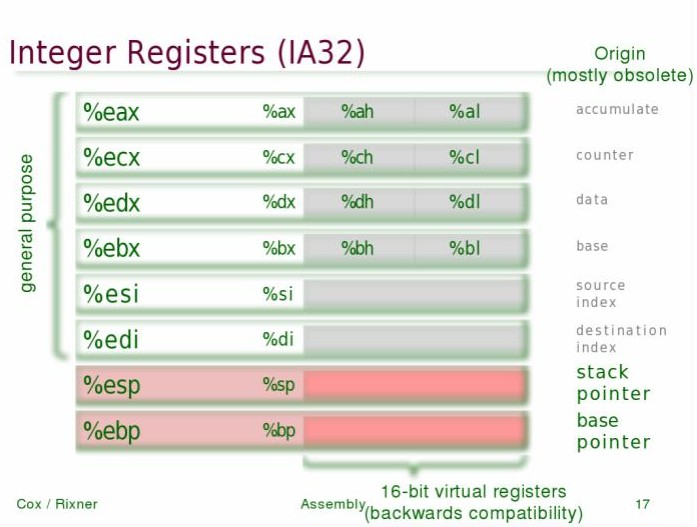
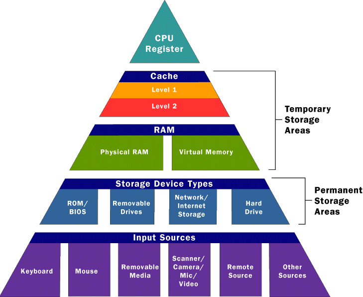

Assembly is a very low level programming language that serves as a streamlined way of writing machine code.
There is a one-to-one correspondence between the instructions used in Assembly and machine code.
Assembly is device (processor architecture) specific as different architectures have differing pre-defined instruction sets.
Assembly is translated into machine language by an assembler.
Simple Example
Load register AL with following byte of code: 01100001 Binary:10110000 01100001 Hexadecimal:B0 61 Assembly:MOV AL, 61h
Some Terminology:
Register - easily accessible piece of memory on processor die
Accumulator - special register in which calculation results are stored (used in older processors, intel still stores multiplication in EAX and EDX registers)
32-bit Intel CPUs have 8 registers (EAX, ECX, EDX, EBX, ESP, EBP, ESI, EDI ), 64-bit CPUs have 16


Usage
- Compiled languages are eventually converted into assembly
- Wirth’s law - software is becoming slower at a faster rate than hardware is becoming faster
- Compilers usually have options to generate assembly code
- Low level applications, interrupt handlers, and hardware drivers benefit from the efficiency of assembly
- “Getting money’s worth” out of legacy hardware
- Firmware for appliances
- Situations where precise timing is required (airplanes, medical equipment)
- High security programs
Usage in the Game Boy (More Complex Example)
Updating life counter once score exceeds 100:
Python:
score = 95
life = 1
...
score += 1
if score > 100:
score = 0
life += 1
Assembly:
LD A, 0
LD (8000H), A ; store score in memory
…
LD A, (8000H) ; load score from memory, commence check
INC A
LD (8000H), A
SUB 100 ; from accumulator
JP C, AFTER ; jump to AFTER if previous operation is negative
LD A, 0
LD (8000H), A
LD A, (8001H)
INC A
LD (8001H), A
AFTER: ; when score is not above 100 (move along)
"Hello World in Assembly:"
global _start
section .data
hello db "Hello, World!", 10
length equ $-hello
section .text
_start:
mov eax, 4 ; write to file
mov ebx, 1 ; STDOUT handle
mov ecx, hello ; message
mov edx, length ; size of message
int 80h ; execute the syscall
xor ebx, ebx ; send 0 as 'exit code'
mov eax, 1 ; terminate process
int 80h ; execute the syscall
;; intel notation is used (as opposed ot AT&T)
- Very efficient, only several processor operations needed to print "Hello, World!"
Made by Karol Regula.
Credits to bootstrap and stack overflow.